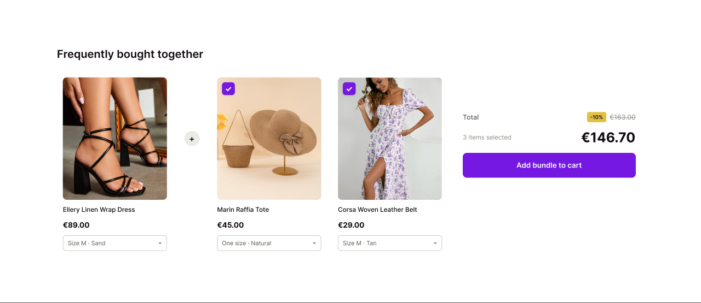
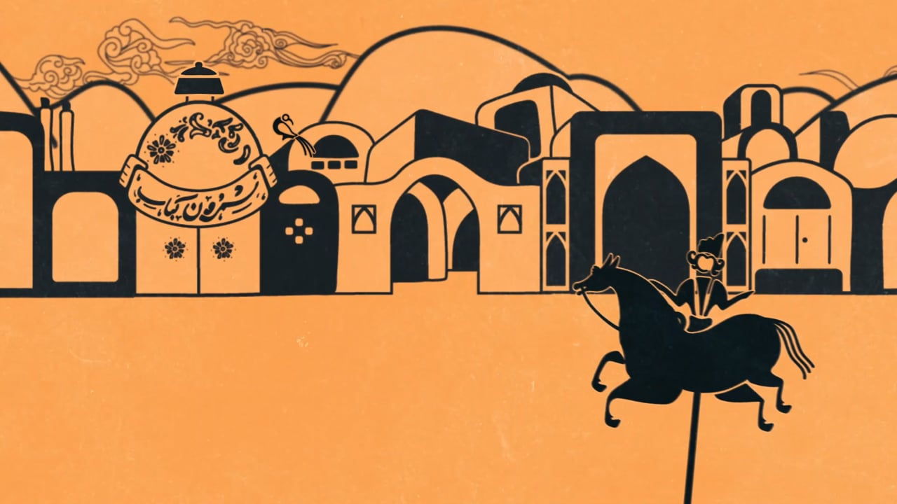
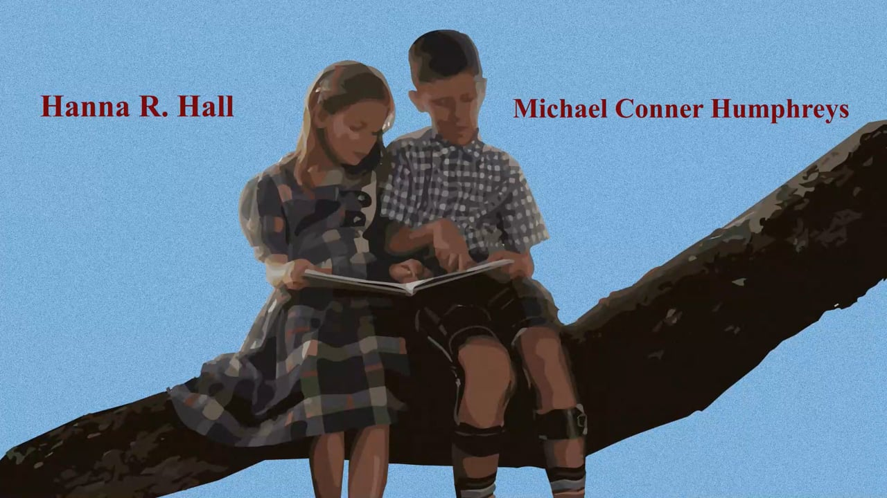
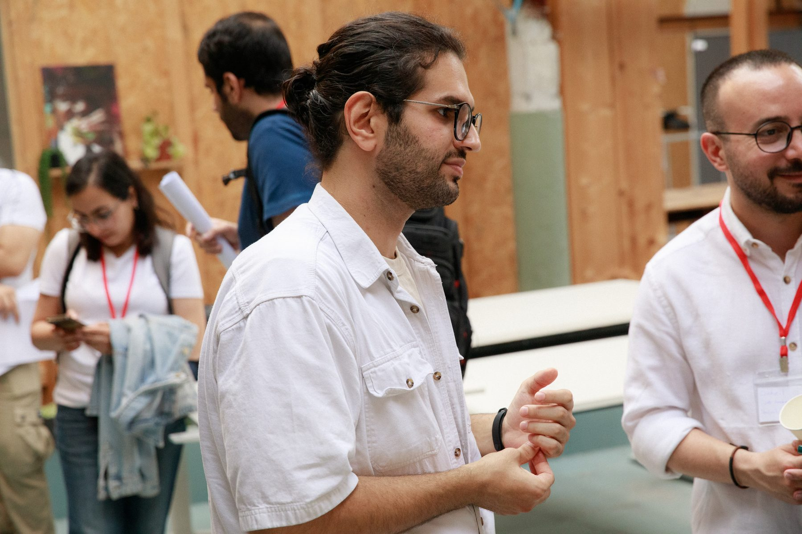

I design the moment someone decides to buy.
I'm Navid. I design commerce products — interfaces where every decision has a price attached to it. Right now that's Extendsell, where I design the add-ons, frequently-bought-together, and related-products experiences for Shopify merchants and the people buying from them.
Three projects, one habit: cut until only the decision is left.

Main projectExtendsell — three ways to sell more without making the shopper feel sold to
Add-ons, frequently bought together, and related products: three storefront widgets that have to feel like one product. Two users who want opposite things, in light and dark, from 1280 down to 390.

Motion designShemroon — motion identity
A brand in motion, cut two ways: a 32-second long form and a 10-second version that has to land the same idea with a third of the time. Designing the short one taught me more about hierarchy than any static layout ever did.

Title designForrest Gump — title sequence, reimagined
A self-directed title-sequence concept: posterised frames, a restrained serif, and cast names timed to the cuts. Ninety seconds of pure typography and pacing — the closest motion gets to interface design.
Where I learned timing.
Motion design first, then the film work underneath it.
An edit and an interface are the same problem: someone is giving you their attention, and you owe them something worth it.
I studied cinema editing in Tehran and spent six years learning how attention actually works — what holds it, what loses it, and how much you can remove before a thing stops making sense. Then I moved that instinct into product design, which is where it turned out to be most useful.
Today I design commerce interfaces at Extendsell: three storefront widgets and the merchant admin behind them. It's a product with two users who want opposite things — the merchant wants the offer seen, the shopper wants to not be sold to — and almost every decision is a negotiation between them. I like that constraint. It makes the arguments concrete.
The motion background isn't a detour either. Knowing how something moves — how timing changes what a person believes about an interface — is a design skill that static mockups quietly hide.
I'm in the Netherlands now, doing a master's in Digital Media Studies at Tilburg University while I keep designing.
Design
- UI/UX design
- Wireframing
- Prototyping
- Design systems
- Visual design
- Figma
Motion
- Motion graphics
- After Effects
- Storyboarding
- Premiere Pro
- Colour
Working
- Project management
- Iterative design
- Cross-functional teams
- Client briefing
- English & Persian

MA Digital Media Studies — Tilburg University
Netherlands. Media and digital culture, alongside product design work.
Video Editor / Motion Designer — Talayiha
Tehran. 10+ projects for 15+ clients, from pre-production storyboards to platform-optimised delivery.
Short Film Instructor — Salam Iran Zamin High School
Tehran. Taught 10+ students a year in storyboarding, cinematography, and editing.
Freelance Motion Designer & Editor
Remote. 25+ pieces and end-to-end timelines for 15+ clients.
Four steps, and the third one is the job.
Watch first
Sit with the raw material — users, tickets, the existing flow — and find where attention actually breaks.
Name the tension
Most products have two users pulling opposite ways. Say it out loud and the scope decisions make themselves.
Cut
Prototype, test, remove. If a screen doesn't move the decision forward it leaves, however long it took to make.
Watch it with someone else
Nothing is finished until a person who isn't me has used it. Then cut again.